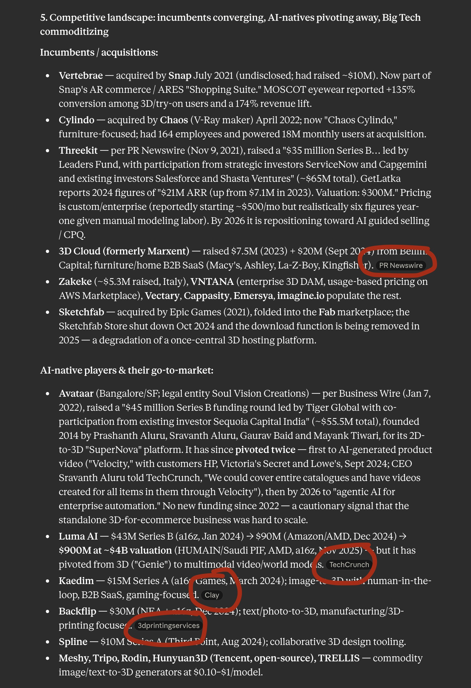

It writes with total confidence whether it's right or wrong. Every number, every quote, every "fact" ships with a citation.
Treat the output as a sharp first draft from a fast intern — not a verified report. Your name goes on the conclusions, not the tool's.
Searching → verifyingThe shift: you stop collecting links and start checking a synthesis — the skill moves from searching to verifying.

Every claim links to its source